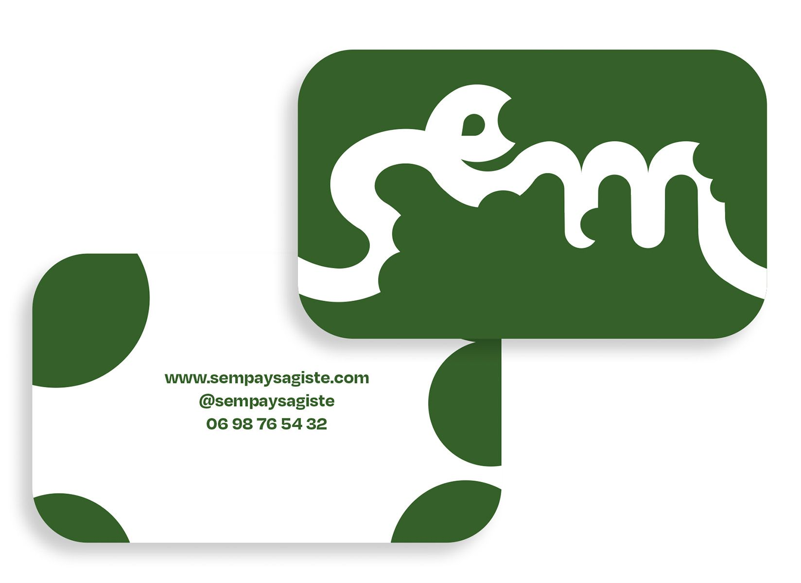
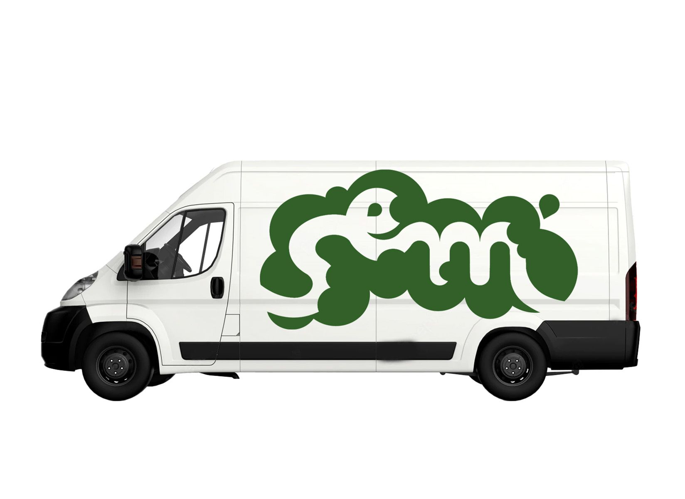
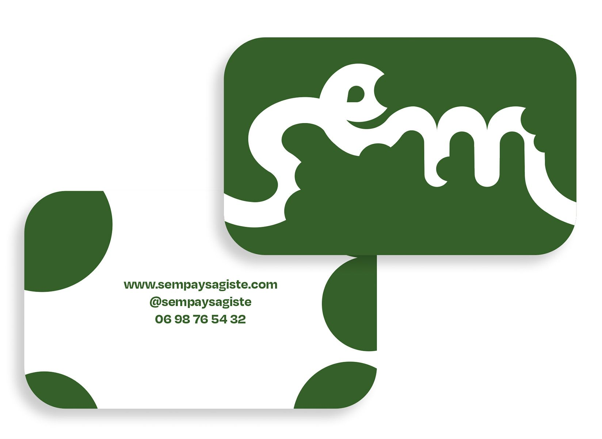
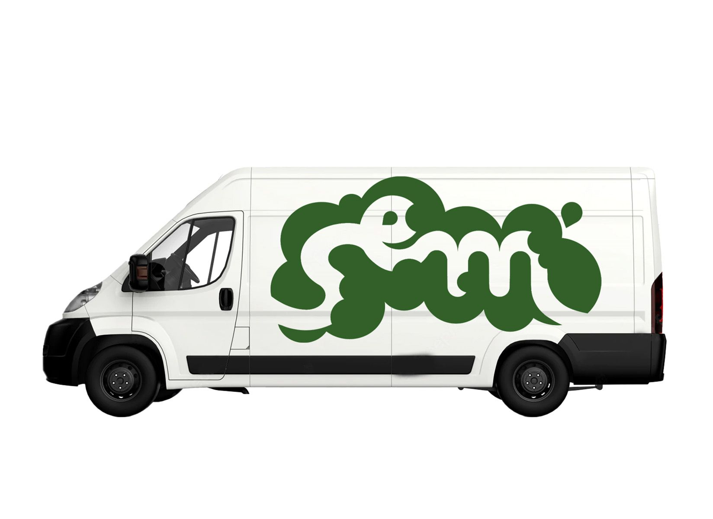

Il s’agit d’une entreprise fictive, de paysagistes cherchant à structurer le végétal, tout en lui permettant d’évoluer à sa guise. La main de l’homme reste discrète.
J’ai choisi le symbole d’un sentier aux courbes souples, bordé de buissons, pour évoquer la cohabitation entre ordre et liberté.
Identité visuelle • Logo, carte de visite, page Instagram et revêtement pour camion
 


